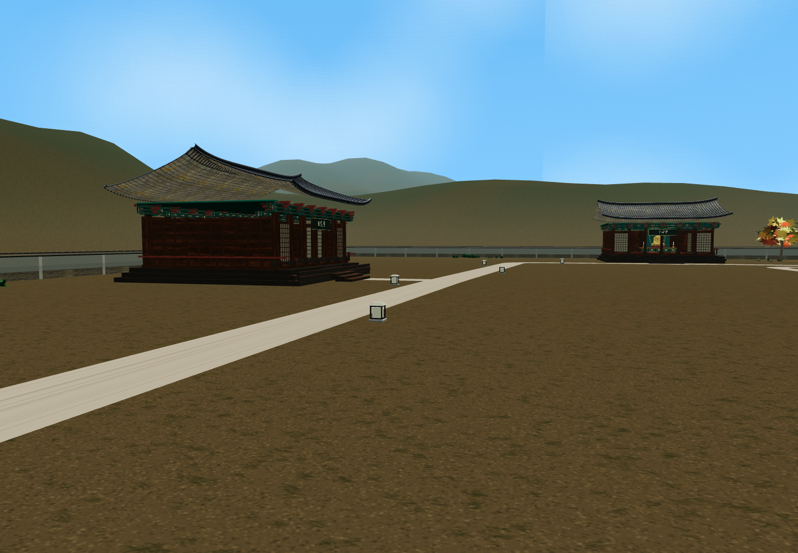
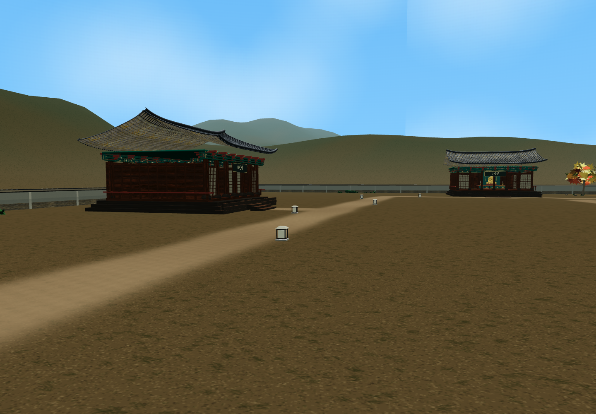
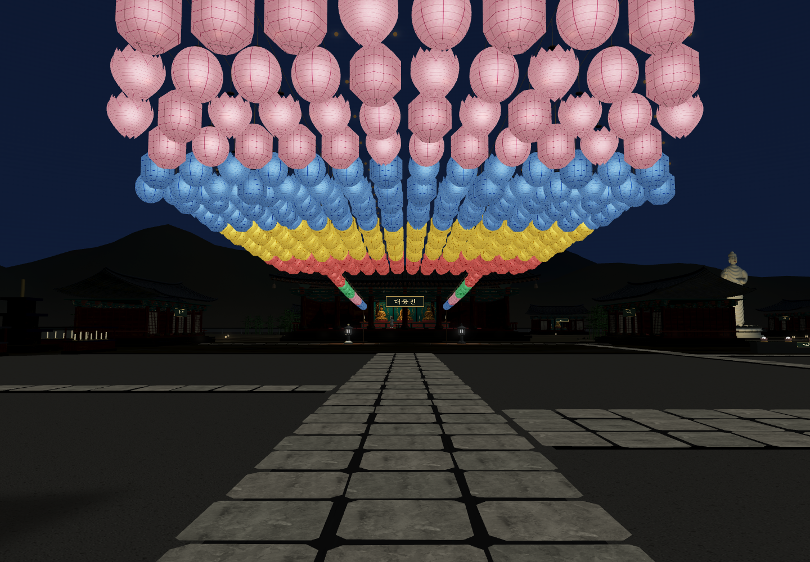
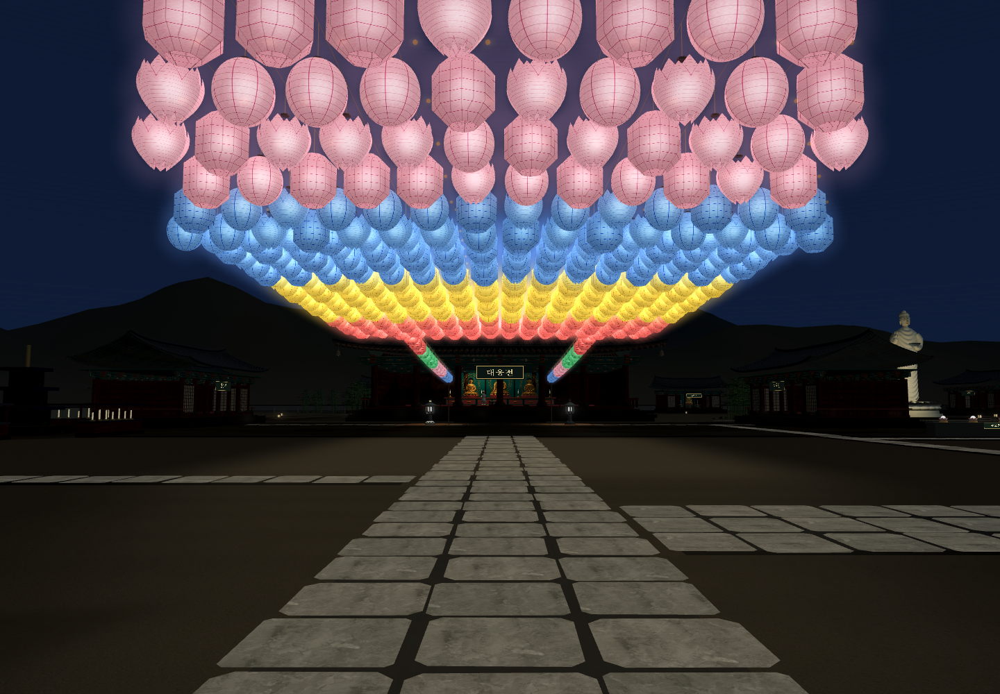

<meta charset="utf-8"><style>*{box-sizing:border-box}body{margin:0;background:#f5f3eb;color:#263f34;font-family:"Apple SD Gothic Neo",sans-serif}.sheet{width:1500px;padding:32px}h1{font-size:30px;margin:0 0 12px}p{font-size:19px;color:#697365;margin:0 0 24px}.row{display:grid;grid-template-columns:1fr 1fr;gap:20px;margin-bottom:24px}figure{margin:0}img{width:100%;display:block}figcaption{font-size:20px;padding-top:10px;font-weight:600}</style><section class="sheet" id="comparison"><h1>자연스러운 흙길과 연등 야간 빛</h1><p>같은 각도의 실제 맵 · 왼쪽 변경 전 / 오른쪽 변경 후</p><div class="row"><figure><figcaption>기존 · 선명한 띠처럼 구분되는 길</figcaption></figure><figure><figcaption>변경 · 부드러운 경계와 주변 흙으로 연결</figcaption></figure></div><div class="row"><figure><figcaption>기존 · 연등 아래 야간 모습</figcaption></figure><figure><figcaption>변경 · 부드러운 빛 번짐과 따뜻한 바닥 빛</figcaption></figure></div><p>돌길·중앙 마당 유지 · 보행 높이 유지 · 한지 재질과 내 연등 LED 유지 · 추가 실제 광원 없음</p></section>